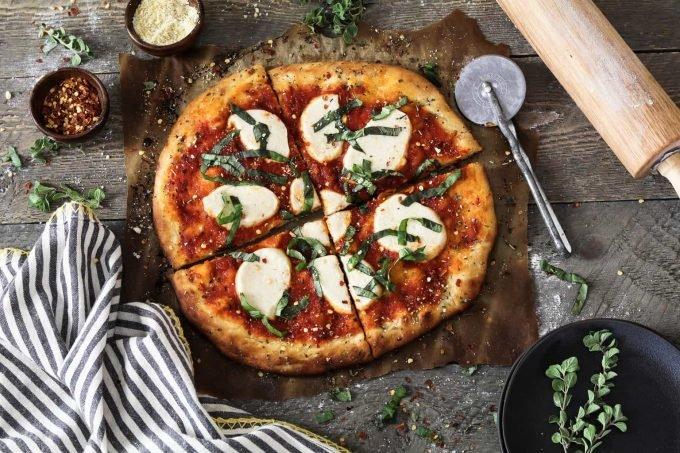

Vegan Pizza

Try out this restaurant-style Vegan Pizza Recipe
in the comfort
of your own home. It's easy to make and delivers the
most delicious crust.
It's crispy on the outside and fluffy on the inside.
this Vegan Pizza Recipe will put the fun back in pizza making.
It's so easy to make and will be on your table
in just one hour (or less).
Most of that time is just waiting for the dough,
so you can sit back and relax while that's going on.
Ingredients
Pizza Dough
- 1 cup warm water
- 1 packet fast-acting yeast
- 2 cups all-purpose flour
- 2 tablespoons olive oil
- 2 tablespoons sugar
- 1 teaspoon salt
- 1/2 teaspoon garlic powder
Toppings
- 1/2 cup marinara sauce
- homemade vegan mozzarella cheese
- 1/2 cup fresh basil
- 1 1/2 teaspoons Italian seasoning
Instructions
Pizza Dough
- Preheat oven to 500 degrees F. (yup, as hot as it goes).
- Stir yeast and ½ tablespoon sugar into warmed water until dissolved.
Let it sit for 7-10 minutes, until foamy.
- In a large bowl, add the flour, garlic powder, salt and remaining sugar.
Whisk to combine.
Add the activated yeast to the bowl along with the olive oil.
Mix until all ingredients are well combined and form a dough.
If dough is too sticky, add a couple tablespoons of flour.
- Form the dough into a ball and place back in the bowl
(*lightly dust bowl with flour before placing the dough ball in).
Completely cover the bowl with a damp napkin or hand towel for 30 minutes
or until dough doubles in size.
- *You'll need a pizza pan or large cutting board ready to transfer
the pizza into and out of the oven, but you won't be cooking on it.
The pizza will be cooked on parchment paper only.
- Place a large piece of parchment paper over your work area
(about the size of your pan).
Dust the paper with flour so you
can spread your dough easily. * Cut the dough in half using a wet knife.
This recipe makes two 10-inch pizzas. I make one pizza at a time.
While one is cooking, I'll prepare the other.
- Using your hands, spread dough across the parchment paper into a
round pizza shape to your desired thickness.
I spread the dough pretty thin because it rises while cooking.
The edges should be slightly thicker to form a pillowed crust.
- To season your crust, lightly brush with olive oil and sprinkle
with salt and Italian herbs.
- Using a spoon, spread the sauce evenly over the pizza and
top with the mozzarella.
- Carefully slide the parchment paper onto your pan to transfer to the oven.
Now slide the parchment paper
back off your pan and directly onto the middle oven rack.
- Bake for 10-15 minutes, until the crust is golden brown.
The pizza cooks fast so keep an eye on it.
Note
- Makes 2 10-inch pizzas.
- If the yeast doesn't foam up after 7 - 10 minutes, start
with a new packet. Make sure the water is warm, but not too hot
or it won't work.
- Nutritional info does not contain the mozzarella cheese topping.